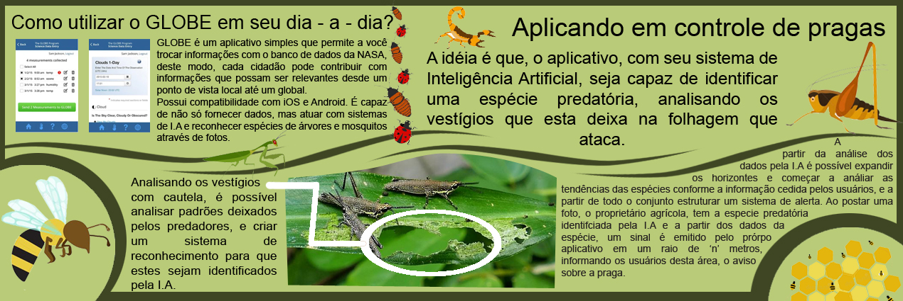

| Bem vindo ao projeto The Bug Food! |
Nosso projeto consiste em analisar dados do aplicativo Globe - The Global Learning and Observation to Benefit the Environment - da NASA, com o intuito de promover o estudo e o desenvolvimento de banco de dados sobre populações de insetos no Brasil e no mundo. |
Mas, por que insetos?
Insetos são predadores naturais de diversas plantações, interferindo nestas de forma negativa e ainda desconhecida à maioria dos brasileiros. Com o auxílio dos dados propostos pelo GLOBE, inciaremos um estudo de caso a seguir que o levará a perceber a utilidade e importância deste aplicativo em diversas analises e o modo como estas podem impactar o mundo. |
Gafanhotos
A população de gafanhotos tem como fator de reprodução a temperatura e a umidade. Ao se desestabilizar o ecossistema tende-se a favorecer essa dissonância e criar uma superpopulação. O problema desse fenômeno é que estes insetos investem em grupo sobre as propriedades agrícolas, danificando plantações. |
A idéia proposta pelo projeto é, através do aplicativo da GLOBE criar um sistema de monitoramento destes animais, de forma a conseguir mapear as populações através de informações fornecidas pelos usuários. |
Solução |
|
|  | |
A partir do sistema de alerta implementado, fornecedores entomofágicos(vendedores de insetos para alimentação) podem rastrear locais para colheita de insetos e com isso podem ampliar suas redes à parcerias com produtores agrícolas, pois as pragas vão atrás do alimento que em sua grande maioria são replantados. Desta forma, o sistema se expande a uma associação comercial, promovendo mais lucro a ambos associados devido ao problema de um ser a solução do outro. |
| Todos os direitos reservados à NASA pelo fornecimento das informações. |